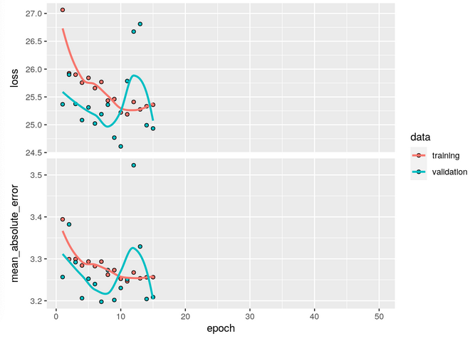
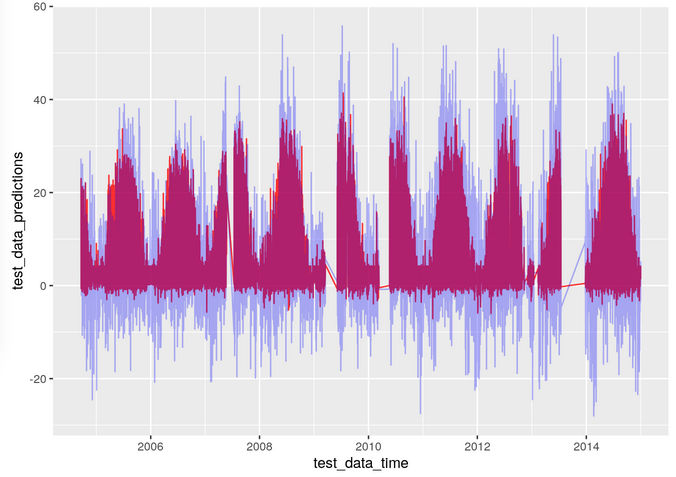
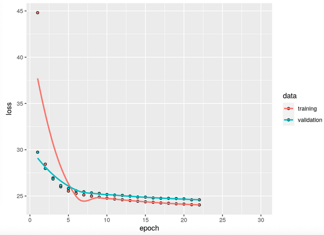
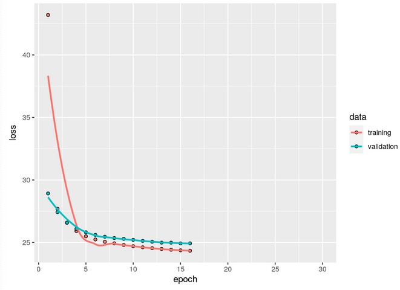
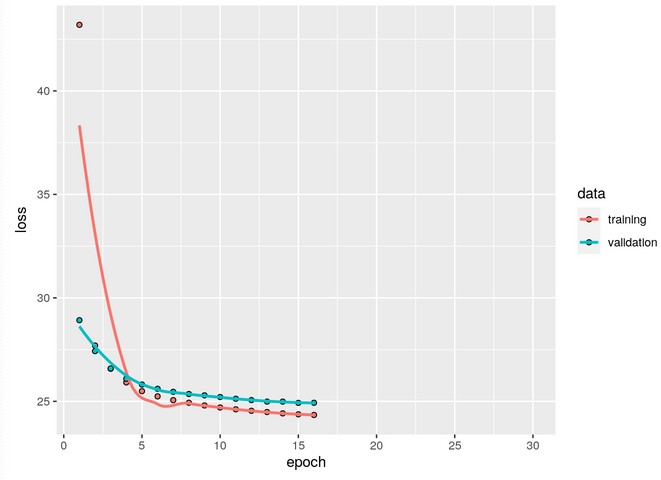
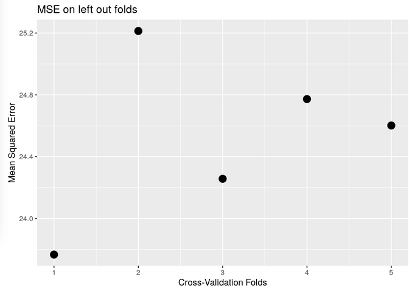
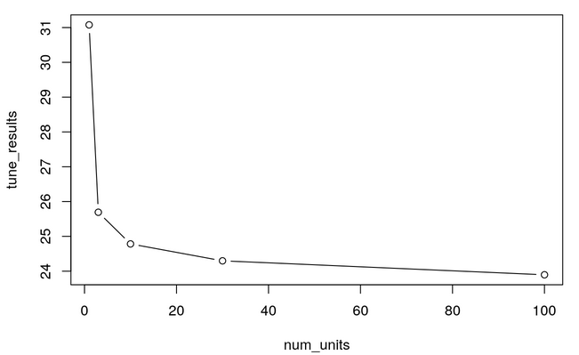

Chapter 12 Application 2: Neural Networks and Hyperparameter Tuning
The goal of this application is to put the concepts that we have learnt over all these weeks into practice. The task at hand is to predict the productivity of vegetation (GPP_NT_VUT_REF), using an artificial neural network. For this task we will be using the FLX_CH-Lae_FLUXNET2015_FULLSET_HH_2004-2014_1-3_CLEAN data, that we obtained after the data wrangling tutorial
12.1 Introduction
12.1.1 Learning Goals
After this exercise session you shall be able to
- Create training and testing splits (80/20)
- Center and scale your data features (pre-processing)
- Use KFold cross-validation for hyper-parameter tuning
- Build and train a simple, 1 hidden layer NN for regression tasks
- Optimise the number of hidden layer units.
- Evaluate feature importance and its effects on the model performance (maybe as bonus?) Definitely a bonus
12.1.2 Key Points from Previous Lectures
It is always worthwhile to perform an initial exploratory analysis of your data, e.g. to identify outliers, missing values, etc.
To train a statistical model using machine learning, we split our data into training and testing sets. Sometimes we also include a validation set.
Testing data is set aside at the initial split and not “touched” during model training. It is key to test a model’s predictive power or whether it is overfitted.
Validation data is used for determining the loss during model training. The reason for distinguishing between testing and validation data is to assure we’re not misleading model training by some peculiarities of the validation data and we get an assessment of generalisability based on data that was not seen during model training.
Loss is a measure of how well our trained model predicts training labels. Loss is high when predictions are poor. Loss is low when predictions are good.
Model training minimises the loss. In other words, it optimises (maximises) the agreement between predicted and observed values.
There are several ways to measure loss. RMSE (Root Mean Squared Error) is one such measure. It is used in regression problems.
Gradient descent is a method that searches for model parameters that minimize loss.
Machine learning algorithms have hyperparameters. These are parameters that are set by the user rather than learned during training. An example is the learning rate in gradient descent. In the case of Artificial Neural Networks, this can be the number of nodes per hidden layer, or the number of hidden layers.
To tune a model, you can set hyperparameters that determine model structure or calibrate the coefficients.
Generalisability refers to the model’s performance on data not seen during the training - the testing data.
To avoid overfitting, model generalisability is desired already during model training. One method to do this is cross validation.
Data leakage is when data from the testing dataset creeps into the training data. To avoid this the testing set must be left completely untouched!
12.2 Application
12.2.1 Problem Statement
For this exercise we can use the reduced and cleaned dataset with half-hourly data from Chapter 2. The task is to predict the productivity of vegetation (GPP), using all the other features as predictor variables.
GPP_NT_VUT_REF from the dataset is the target variable and rest of the columns can be used as the input predictor variables. For the sake of limiting the task complexity, we assume the data to be IID generated, and treat each row in the dataset as an independent observation.
- Use these inputs to create a neural network with just one hidden layer.
- Use cross validation to optimise hyper-parameters such as number of hidden nodes, choice of activation function etc.
- Use mean squared error (MSE) loss as a metric for monitoring the performance, plot the MSE loss as a function of the number of epochs.
- Plot the MSE loss as a function of the hyperparameters used.
- The list of tasks mentioned here are not exhaustive, you’ll be guided through the application and asked questions along the way!
12.2.2 Data preparation
## Loading the required libraries
library(keras)
library(reticulate)
library(caret)
library(tidyverse)
library(recipes)
# use_condaenv()### Read in the .csv file as a dataframe
df <- read.csv("./data/FLX_CH-Lae_FLUXNET2015_FULLSET_HH_2004-2014_1-3_CLEAN.csv")
### Things to check when preprocessing
# Look at the structure and shape of the data (print it out using str())
# Convert time-stamp columns using as.POSIXct() to convert them from a character to date-time object
# As we treat the observations as IID, we don't really need the time-stamp values as a feature variable, but we still retain them as they will be used for some time series plots later.
dim(df)## [1] 192864 20str(df)## 'data.frame': 192864 obs. of 20 variables:
## $ TIMESTAMP_START: chr "2004-01-01T00:00:00Z" "2004-01-01T00:30:00Z" "2004-01-01T01:00:00Z" "2004-01-01T01:30:00Z" ...
## $ TIMESTAMP_END : chr "2004-01-01T00:30:00Z" "2004-01-01T01:00:00Z" "2004-01-01T01:30:00Z" "2004-01-01T02:00:00Z" ...
## $ TA_F : num -2.22 -2.25 -2.28 -2.5 -2.72 ...
## $ SW_IN_F : num 0 0 0 0 0 0 0 0 0 0 ...
## $ LW_IN_F : num 304 304 281 281 281 ...
## $ VPD_F : num 0.562 0.56 0.558 0.565 0.571 0.577 0.584 0.59 0.596 0.606 ...
## $ PA_F : num 93.3 93.3 93.3 93.3 93.3 ...
## $ P_F : num 0.014 0.014 0 0 0 0 0 0 0 0 ...
## $ WS_F : num 2.2 2.13 2.06 1.96 1.85 ...
## $ CO2_F_MDS : num NA NA NA NA NA NA NA NA NA NA ...
## $ PPFD_IN : num NA NA NA NA NA NA NA NA NA NA ...
## $ GPP_NT_VUT_REF : num NA NA NA NA NA NA NA NA NA NA ...
## $ SWC_F_MDS_1 : num NA NA NA NA NA NA NA NA NA NA ...
## $ SWC_F_MDS_2 : num NA NA NA NA NA NA NA NA NA NA ...
## $ SWC_F_MDS_3 : num NA NA NA NA NA NA NA NA NA NA ...
## $ WS : num NA NA NA NA NA NA NA NA NA NA ...
## $ WD : num NA NA NA NA NA NA NA NA NA NA ...
## $ RH : num NA NA NA NA NA NA NA NA NA NA ...
## $ NIGHT : int 1 1 1 1 1 1 1 1 1 1 ...
## $ NEE_VUT_REF_QC : int 3 3 3 3 3 3 3 3 3 3 ...df$TIMESTAMP_START <- as.POSIXct(df$TIMESTAMP_START, format = "%Y-%m-%dT%TZ")
df$TIMESTAMP_END <- as.POSIXct(df$TIMESTAMP_END, format = "%Y-%m-%dT%TZ")
### Check the structure of your data again (print it out using str())
str(df)## 'data.frame': 192864 obs. of 20 variables:
## $ TIMESTAMP_START: POSIXct, format: "2004-01-01 00:00:00" "2004-01-01 00:30:00" ...
## $ TIMESTAMP_END : POSIXct, format: "2004-01-01 00:30:00" "2004-01-01 01:00:00" ...
## $ TA_F : num -2.22 -2.25 -2.28 -2.5 -2.72 ...
## $ SW_IN_F : num 0 0 0 0 0 0 0 0 0 0 ...
## $ LW_IN_F : num 304 304 281 281 281 ...
## $ VPD_F : num 0.562 0.56 0.558 0.565 0.571 0.577 0.584 0.59 0.596 0.606 ...
## $ PA_F : num 93.3 93.3 93.3 93.3 93.3 ...
## $ P_F : num 0.014 0.014 0 0 0 0 0 0 0 0 ...
## $ WS_F : num 2.2 2.13 2.06 1.96 1.85 ...
## $ CO2_F_MDS : num NA NA NA NA NA NA NA NA NA NA ...
## $ PPFD_IN : num NA NA NA NA NA NA NA NA NA NA ...
## $ GPP_NT_VUT_REF : num NA NA NA NA NA NA NA NA NA NA ...
## $ SWC_F_MDS_1 : num NA NA NA NA NA NA NA NA NA NA ...
## $ SWC_F_MDS_2 : num NA NA NA NA NA NA NA NA NA NA ...
## $ SWC_F_MDS_3 : num NA NA NA NA NA NA NA NA NA NA ...
## $ WS : num NA NA NA NA NA NA NA NA NA NA ...
## $ WD : num NA NA NA NA NA NA NA NA NA NA ...
## $ RH : num NA NA NA NA NA NA NA NA NA NA ...
## $ NIGHT : int 1 1 1 1 1 1 1 1 1 1 ...
## $ NEE_VUT_REF_QC : int 3 3 3 3 3 3 3 3 3 3 ...Recall the tutorial on data wrangling. We already performed some data-preprocessing there. We had replaced the missing value flag -9999 by NAs for the target variable GPP_NT_VUT_REF. We had used the categorical variable NEE_VUT_REF_QC, representing the quality control, to further edit some of the values of the target variable GPP_NT_VUT_REF. For all those rows where \(NEE\_VUT\_REF\_QC \in \{3,4\}\), i.e. poor quality of measurements, we have already replaced the target variable GPP_NT_VUT_REF with NAs.
Thus we remove all the rows where the target variable is NA. As the target GPP_NT_VUT_REF is missing, we cannot learn or test against this data, so we remove all the rows where the target variable is missing. After we do this, the information that we previously encoded in NEE_VUT_REF_QC has already been used to filter out the rows with poor quality control measures. The variable NEE_VUT_REF_QC does not carry any additional information that would be helpful in predicting the target variable. Consequently, we can discard this variable. Note that NEE_VUT_REF_QC was a categorical feature in our dataset, and by discarding it we got lucky. Neural networks in keras require input data in the form of matrices, and if we had any other categorical variables present in our data, we would have to encode these e.g. One-Hot Encoding vectors. But indeed we have one remaining: NIGHT (Check unique(df$NIGHT)). In order to avoid further complications we remove Night from our dataset as well.
## Drop rows with NAs for GPP_NT_VUT_REF, and discard the columns NEE_VUT_REF_QC and NIGHT
df <- df %>%
drop_na(any_of("GPP_NT_VUT_REF")) %>%
select(-c("NEE_VUT_REF_QC","NIGHT"))
## Print the dimensionality of the data frame now to check how many rows have been deleted, and the num of columns remaining
dim(df)## [1] 176132 18## Print the summary() of your dataframe for some more information about your variables
summary(df)## TIMESTAMP_START TIMESTAMP_END TA_F
## Min. :2004-03-31 11:00:00 Min. :2004-03-31 11:30:00 Min. :-17.200
## 1st Qu.:2007-02-04 11:52:30 1st Qu.:2007-02-04 12:22:30 1st Qu.: 1.520
## Median :2009-10-01 17:15:00 Median :2009-10-01 17:45:00 Median : 8.010
## Mean :2009-09-26 02:34:05 Mean :2009-09-26 03:04:06 Mean : 7.808
## 3rd Qu.:2012-05-19 19:37:30 3rd Qu.:2012-05-19 20:07:30 3rd Qu.: 13.850
## Max. :2014-12-31 23:30:00 Max. :2015-01-01 00:00:00 Max. : 31.820
## NA's :20 NA's :20
## SW_IN_F LW_IN_F VPD_F PA_F
## Min. : 0.000 Min. :135.4 Min. : 0.000 Min. :89.57
## 1st Qu.: 0.000 1st Qu.:275.4 1st Qu.: 0.203 1st Qu.:92.86
## Median : 2.139 Median :310.5 Median : 1.737 Median :93.34
## Mean : 138.904 Mean :304.2 Mean : 3.313 Mean :93.26
## 3rd Qu.: 182.627 3rd Qu.:337.2 3rd Qu.: 4.877 3rd Qu.:93.75
## Max. :1074.410 Max. :423.9 Max. :34.391 Max. :95.32
##
## P_F WS_F CO2_F_MDS PPFD_IN
## Min. :0.0000 Min. : 0.004 Min. :210.8 Min. : 3.399
## 1st Qu.:0.0000 1st Qu.: 1.180 1st Qu.:370.7 1st Qu.: 4.114
## Median :0.0000 Median : 2.065 Median :386.5 Median : 6.831
## Mean :0.0656 Mean : 2.499 Mean :395.9 Mean : 281.226
## 3rd Qu.:0.0590 3rd Qu.: 3.366 3rd Qu.:401.6 3rd Qu.: 341.000
## Max. :3.5510 Max. :13.249 Max. :999.4 Max. :2170.000
## NA's :5172
## GPP_NT_VUT_REF SWC_F_MDS_1 SWC_F_MDS_2 SWC_F_MDS_3
## Min. :-35.4686 Min. : 7.70 Min. : 6.532 Min. : 7.32
## 1st Qu.: -0.3901 1st Qu.:18.46 1st Qu.:17.340 1st Qu.:18.61
## Median : 1.6599 Median :21.17 Median :22.050 Median :21.55
## Mean : 4.8678 Mean :21.47 Mean :21.213 Mean :21.24
## 3rd Qu.: 7.7467 3rd Qu.:25.03 3rd Qu.:24.690 3rd Qu.:24.01
## Max. : 61.1749 Max. :32.74 Max. :32.086 Max. :31.79
## NA's :15112 NA's :8344 NA's :8344
## WS WD RH
## Min. : 0.004 Min. : 0.062 Min. : 17.09
## 1st Qu.: 1.174 1st Qu.:101.198 1st Qu.: 65.74
## Median : 2.065 Median :227.899 Median : 81.80
## Mean : 2.502 Mean :188.123 Mean : 78.89
## 3rd Qu.: 3.377 3rd Qu.:259.823 3rd Qu.: 97.10
## Max. :13.249 Max. :359.987 Max. :100.00
## NA's :4039 NA's :3442 NA's :6017We see that there are still a few variables with NAs. Let’s see how many NAs each column has and what would be the number of rows in the resulting dataframe if we drop all rows with NAs
## Compute how many rows have NA values for each column, and report the result for each column, print the result
# e.g.
# TIMESTAMP_START 0
# TIMESTAMP_START0TIMESTAMP_END 0
# TA_F abc
# .
# .
# .
# RH xyz
colSums(is.na(df))## TIMESTAMP_START TIMESTAMP_END TA_F SW_IN_F LW_IN_F
## 20 20 0 0 0
## VPD_F PA_F P_F WS_F CO2_F_MDS
## 0 0 0 0 0
## PPFD_IN GPP_NT_VUT_REF SWC_F_MDS_1 SWC_F_MDS_2 SWC_F_MDS_3
## 5172 0 15112 8344 8344
## WS WD RH
## 4039 3442 6017## Compute the rows we will be left with, if we drop all rows where even 1 column contains NA, print the result
nrow(df %>% drop_na())## [1] 155451The number of rows with NAs are not that large compared to the current size of the dataset. So we can afford to discard these rows without reducing the size of our dataset by much, and we still have enough data to carry out analysis.
Sidenote: It can happen in some cases that by doing so we lose a majority of our dataset, because each row has at least 1 column with NA. If the number of rows reduced significantly by this operation, we would use some data imputation technique to fill-in these NA values. But also note that by doing so, we are introducing some bias to our model, by the data imputation technique we choose.
## drop all the rows with NAs
df <- df %>% drop_na()
str(df)## 'data.frame': 155451 obs. of 18 variables:
## $ TIMESTAMP_START: POSIXct, format: "2004-09-20 10:30:00" "2004-09-20 11:00:00" ...
## $ TIMESTAMP_END : POSIXct, format: "2004-09-20 11:00:00" "2004-09-20 11:30:00" ...
## $ TA_F : num 13.3 13.4 13.8 14.5 14 ...
## $ SW_IN_F : num 561 462 536 672 390 ...
## $ LW_IN_F : num 346 346 346 346 346 ...
## $ VPD_F : num 2.87 3.35 3.71 4.58 4.25 ...
## $ PA_F : num 93.6 93.6 93.6 93.6 93.6 ...
## $ P_F : num 0.019 0.019 0.019 0.019 0.019 0 0 0 0 0 ...
## $ WS_F : num 2.29 2.86 2.42 2.91 2.87 ...
## $ CO2_F_MDS : num 356 355 354 353 352 ...
## $ PPFD_IN : num 1078 889 1030 1292 750 ...
## $ GPP_NT_VUT_REF : num 21.1 19.4 22.4 30.9 16.9 ...
## $ SWC_F_MDS_1 : num 16.4 16.4 16.4 16.4 16.4 ...
## $ SWC_F_MDS_2 : num 14.4 14.4 14.4 14.4 14.4 ...
## $ SWC_F_MDS_3 : num 16.7 16.7 16.7 16.7 16.7 ...
## $ WS : num 2.29 2.86 2.42 2.91 2.87 ...
## $ WD : num 244 252 248 249 256 ...
## $ RH : num 81.2 78.2 76.5 72.2 73.4 ...## Here we create a few variables to reference different columns that might make preprocessing a little easier for us
## Feel free to use or not use them in the subsequent steps; If you wish not to use them, just put a "#" before the lines below
time_cols <- c("TIMESTAMP_START","TIMESTAMP_END")
target_variable <- c("GPP_NT_VUT_REF")
column_names <- colnames(df)
predictors <- column_names[!column_names %in% c(target_variable, time_cols)] ## time stamp columns and the target variables are not used as predictorsNext, we create indices to split the entire dataset into train and test (80/20) split.
The 80% of our data will be used to train the models and the rest 20% will be our held-out test set to evaluate the performance of the model.
## set seed for reproducibility
set.seed(2021)
## First shuffle the dataset (Hint: sample() )
df <- df[sample(nrow(df)),]
## get indices for train_data into train and test splits (Hint: sample() )
ind <- sample(2, nrow(df), replace=TRUE, prob = c(0.8,0.2))
## Use the indicies to get test and train splits
train_split <- df[ind == 1, ] ## include all columns
test_split <- df[ind == 2, ] ## include all columns Next we separate the target variable from the predictors.
## Save time stamps for the test and train splits, as a separate data frame for time-series plots
train_data_time <- train_split$TIMESTAMP_START
test_data_time <- test_split$TIMESTAMP_START
## Separate the splits to get train_data, train_target, test_data and test_target. After this you should have 4 corresponding dataframes. Also drop the time stamp columns from the train data and test data as we treat the observations as IID. ( we have stored them separately for plots )
train_target <- train_split %>% select(target_variable)
test_target <- test_split %>% select(target_variable)
train_data <- train_split %>% select(-one_of(c(target_variable, time_cols)))
test_data <- test_split %>% select(-one_of(c(target_variable, time_cols)))
head(test_data)## TA_F SW_IN_F LW_IN_F VPD_F PA_F P_F WS_F CO2_F_MDS PPFD_IN
## 94853 4.473 116.437 263.402 2.854 92.573 0.000 4.911 391.322 230.800
## 119494 6.142 132.001 341.487 0.123 94.599 0.201 1.483 489.318 279.600
## 91493 13.550 446.310 340.507 6.240 93.764 0.026 0.625 372.174 938.000
## 65225 9.200 0.000 346.635 3.556 93.191 0.000 6.901 371.297 4.106
## 119406 14.450 320.703 297.376 5.043 93.937 0.000 0.365 393.235 706.000
## 41390 12.480 0.000 276.947 6.894 93.491 0.000 0.859 358.149 4.262
## SWC_F_MDS_1 SWC_F_MDS_2 SWC_F_MDS_3 WS WD RH
## 94853 27.760 24.550 24.140 4.911 225.587 66.06
## 119494 28.861 28.542 28.722 1.483 105.247 98.70
## 91493 27.620 24.990 26.960 0.625 222.012 59.82
## 65225 15.780 17.330 16.660 6.901 252.697 69.45
## 119406 27.528 26.817 27.282 0.365 198.350 69.37
## 41390 18.420 20.860 21.390 0.859 137.811 52.3912.2.3 Center and scale
Take care to extract the centering and scaling parameters from the training set and use them to center and scale your test data.
If you use the entire data set to get the centering and scaling parameters, we actually use information from the test-data, which is something we don’t have access to in real life. Thus doing so results in information leak from the test data, and we may get results more optimistic than our model’s true predictions. Follow the steps below to carry out centering and scaling in a proper way:
- Extract normalisation parameters from train data for numeric predictors
- Normalize train data using these parameters
- Normalize test data using the parameters extracted from train data
- Generally we only normalize the numeric variables and not the factors
## Make use of recipe() or any other function you wish, to scale and center each of the columns
train_data_stat <- preProcess(train_data, method = c("center","scale")) # get the statistics (mean, variance, etc) of numeric cols
train_data[, predictors] <- predict(train_data_stat, train_data) # transform the train data to center and scale it
test_data[, predictors] <- predict(train_data_stat, test_data) # transform the test data to center and scale it
# OR
# scale_and_center<- recipe(train_data) %>%
# step_center(all_numeric()) %>%
# step_scale(all_numeric())
# prep_recipe <- prep(scale_and_center, training = train_data)
# train_data <- bake(prep_recipe, new_data = train_data)
# test_data <- bake(prep_recipe, new_data = test_data)
## Display the summary of train data and test data
summary(train_data)## TA_F SW_IN_F LW_IN_F VPD_F
## Min. :-3.07087 Min. :-0.5797 Min. :-3.5688 Min. :-0.7826
## 1st Qu.:-0.78187 1st Qu.:-0.5797 1st Qu.:-0.6240 1st Qu.:-0.7360
## Median : 0.00522 Median :-0.5706 Median : 0.1365 Median :-0.3832
## Mean : 0.00000 Mean : 0.0000 Mean : 0.0000 Mean : 0.0000
## 3rd Qu.: 0.75652 3rd Qu.: 0.1359 3rd Qu.: 0.7074 3rd Qu.: 0.3563
## Max. : 2.91712 Max. : 4.1269 Max. : 2.5027 Max. : 7.6424
## PA_F P_F WS_F CO2_F_MDS
## Min. :-4.9809 Min. :-0.4291 Min. :-1.3776 Min. :-3.29786
## 1st Qu.:-0.5438 1st Qu.:-0.4291 1st Qu.:-0.7414 1st Qu.:-0.46095
## Median : 0.1137 Median :-0.4291 Median :-0.2446 Median :-0.17433
## Mean : 0.0000 Mean : 0.0000 Mean : 0.0000 Mean : 0.00000
## 3rd Qu.: 0.6697 3rd Qu.:-0.0453 3rd Qu.: 0.4881 3rd Qu.: 0.09763
## Max. : 2.7963 Max. :22.6680 Max. : 5.9249 Max. :10.73269
## PPFD_IN SWC_F_MDS_1 SWC_F_MDS_2 SWC_F_MDS_3
## Min. :-0.5767 Min. :-3.06114 Min. :-2.7664 Min. :-2.85365
## 1st Qu.:-0.5752 1st Qu.:-0.66958 1st Qu.:-0.9207 1st Qu.:-0.73046
## Median :-0.5700 Median :-0.06612 Median : 0.1963 Median : 0.09601
## Mean : 0.0000 Mean : 0.00000 Mean : 0.0000 Mean : 0.00000
## 3rd Qu.: 0.1117 3rd Qu.: 0.78896 3rd Qu.: 0.8196 3rd Qu.: 0.77429
## Max. : 3.9776 Max. : 2.51471 Max. : 2.5913 Max. : 3.02886
## WS WD RH
## Min. :-1.3776 Min. :-2.2447 Min. :-3.3769
## 1st Qu.:-0.7414 1st Qu.:-1.0371 1st Qu.:-0.7124
## Median :-0.2446 Median : 0.4799 Median : 0.1570
## Mean : 0.0000 Mean : 0.0000 Mean : 0.0000
## 3rd Qu.: 0.4881 3rd Qu.: 0.8422 3rd Qu.: 0.9816
## Max. : 5.9249 Max. : 2.0263 Max. : 1.1509summary(test_data)## TA_F SW_IN_F LW_IN_F
## Min. :-3.0758483 Min. :-0.579662 Min. :-3.51786
## 1st Qu.:-0.7919767 1st Qu.:-0.579662 1st Qu.:-0.64789
## Median :-0.0009991 Median :-0.570660 Median : 0.11998
## Mean :-0.0034195 Mean : 0.009953 Mean :-0.01008
## 3rd Qu.: 0.7527867 3rd Qu.: 0.155803 3rd Qu.: 0.70732
## Max. : 2.8885133 Max. : 4.014066 Max. : 2.47299
## VPD_F PA_F P_F WS_F
## Min. :-0.782558 Min. :-4.55211 Min. :-0.42906 Min. :-1.37378
## 1st Qu.:-0.734788 1st Qu.:-0.52891 1st Qu.:-0.42906 1st Qu.:-0.74359
## Median :-0.383248 Median : 0.12314 Median :-0.42906 Median :-0.25731
## Mean : 0.001133 Mean : 0.01085 Mean :-0.01593 Mean :-0.01063
## 3rd Qu.: 0.357802 3rd Qu.: 0.67373 3rd Qu.:-0.07132 3rd Qu.: 0.47322
## Max. : 7.332737 Max. : 2.78408 Max. :22.66796 Max. : 5.47831
## CO2_F_MDS PPFD_IN SWC_F_MDS_1 SWC_F_MDS_2
## Min. :-3.11425 Min. :-0.576680 Min. :-3.050001 Min. :-2.775959
## 1st Qu.:-0.46494 1st Qu.:-0.575222 1st Qu.:-0.667353 1st Qu.:-0.942087
## Median :-0.17863 Median :-0.570717 Median :-0.075031 Median : 0.192294
## Mean :-0.01124 Mean : 0.008878 Mean :-0.005281 Mean :-0.009313
## 3rd Qu.: 0.09051 3rd Qu.: 0.133568 3rd Qu.: 0.777824 3rd Qu.: 0.806045
## Max. :10.27260 Max. : 3.824155 Max. : 2.481306 Max. : 2.529647
## SWC_F_MDS_3 WS WD RH
## Min. :-2.850802 Min. :-1.37378 Min. :-2.242558 Min. :-3.357215
## 1st Qu.:-0.721914 1st Qu.:-0.74359 1st Qu.:-1.042955 1st Qu.:-0.710242
## Median : 0.090312 Median :-0.25731 Median : 0.466688 Median : 0.151513
## Mean :-0.002816 Mean :-0.01063 Mean :-0.005619 Mean :-0.000871
## 3rd Qu.: 0.754343 3rd Qu.: 0.47322 3rd Qu.: 0.842417 3rd Qu.: 0.970671
## Max. : 2.845898 Max. : 5.47831 Max. : 2.022990 Max. : 1.150886train_data_stat <- preProcess(train_data, method = c("center", "scale"))
#initialize of same dimension
train_data_cs <- train_data
test_data_cs <- test_data
for (i in 1:ncol(train_data)){
#center and scale training data set
train_data_cs[,i] <- (train_data[,i] - train_data_stat$mean[i])/train_data_stat$std[i]
#center and scale testing data set
test_data_cs[,i] <- (test_data[,i] - train_data_stat$mean[i])/train_data_stat$std[i]
}
summary(train_data_cs)## TA_F SW_IN_F LW_IN_F VPD_F
## Min. :-3.07087 Min. :-0.5797 Min. :-3.5688 Min. :-0.7826
## 1st Qu.:-0.78187 1st Qu.:-0.5797 1st Qu.:-0.6240 1st Qu.:-0.7360
## Median : 0.00522 Median :-0.5706 Median : 0.1365 Median :-0.3832
## Mean : 0.00000 Mean : 0.0000 Mean : 0.0000 Mean : 0.0000
## 3rd Qu.: 0.75652 3rd Qu.: 0.1359 3rd Qu.: 0.7074 3rd Qu.: 0.3563
## Max. : 2.91712 Max. : 4.1269 Max. : 2.5027 Max. : 7.6424
## PA_F P_F WS_F CO2_F_MDS
## Min. :-4.9809 Min. :-0.4291 Min. :-1.3776 Min. :-3.29786
## 1st Qu.:-0.5438 1st Qu.:-0.4291 1st Qu.:-0.7414 1st Qu.:-0.46095
## Median : 0.1137 Median :-0.4291 Median :-0.2446 Median :-0.17433
## Mean : 0.0000 Mean : 0.0000 Mean : 0.0000 Mean : 0.00000
## 3rd Qu.: 0.6697 3rd Qu.:-0.0453 3rd Qu.: 0.4881 3rd Qu.: 0.09763
## Max. : 2.7963 Max. :22.6680 Max. : 5.9249 Max. :10.73269
## PPFD_IN SWC_F_MDS_1 SWC_F_MDS_2 SWC_F_MDS_3
## Min. :-0.5767 Min. :-3.06114 Min. :-2.7664 Min. :-2.85365
## 1st Qu.:-0.5752 1st Qu.:-0.66958 1st Qu.:-0.9207 1st Qu.:-0.73046
## Median :-0.5700 Median :-0.06612 Median : 0.1963 Median : 0.09601
## Mean : 0.0000 Mean : 0.00000 Mean : 0.0000 Mean : 0.00000
## 3rd Qu.: 0.1117 3rd Qu.: 0.78896 3rd Qu.: 0.8196 3rd Qu.: 0.77429
## Max. : 3.9776 Max. : 2.51471 Max. : 2.5913 Max. : 3.02886
## WS WD RH
## Min. :-1.3776 Min. :-2.2447 Min. :-3.3769
## 1st Qu.:-0.7414 1st Qu.:-1.0371 1st Qu.:-0.7124
## Median :-0.2446 Median : 0.4799 Median : 0.1570
## Mean : 0.0000 Mean : 0.0000 Mean : 0.0000
## 3rd Qu.: 0.4881 3rd Qu.: 0.8422 3rd Qu.: 0.9816
## Max. : 5.9249 Max. : 2.0263 Max. : 1.1509summary(test_data_cs)## TA_F SW_IN_F LW_IN_F
## Min. :-3.0758483 Min. :-0.579662 Min. :-3.51786
## 1st Qu.:-0.7919767 1st Qu.:-0.579662 1st Qu.:-0.64789
## Median :-0.0009991 Median :-0.570660 Median : 0.11998
## Mean :-0.0034195 Mean : 0.009953 Mean :-0.01008
## 3rd Qu.: 0.7527867 3rd Qu.: 0.155803 3rd Qu.: 0.70732
## Max. : 2.8885133 Max. : 4.014066 Max. : 2.47299
## VPD_F PA_F P_F WS_F
## Min. :-0.782558 Min. :-4.55211 Min. :-0.42906 Min. :-1.37378
## 1st Qu.:-0.734788 1st Qu.:-0.52891 1st Qu.:-0.42906 1st Qu.:-0.74359
## Median :-0.383248 Median : 0.12314 Median :-0.42906 Median :-0.25731
## Mean : 0.001133 Mean : 0.01085 Mean :-0.01593 Mean :-0.01063
## 3rd Qu.: 0.357802 3rd Qu.: 0.67373 3rd Qu.:-0.07132 3rd Qu.: 0.47322
## Max. : 7.332737 Max. : 2.78408 Max. :22.66796 Max. : 5.47831
## CO2_F_MDS PPFD_IN SWC_F_MDS_1 SWC_F_MDS_2
## Min. :-3.11425 Min. :-0.576680 Min. :-3.050001 Min. :-2.775959
## 1st Qu.:-0.46494 1st Qu.:-0.575222 1st Qu.:-0.667353 1st Qu.:-0.942087
## Median :-0.17863 Median :-0.570717 Median :-0.075031 Median : 0.192294
## Mean :-0.01124 Mean : 0.008878 Mean :-0.005281 Mean :-0.009313
## 3rd Qu.: 0.09051 3rd Qu.: 0.133568 3rd Qu.: 0.777824 3rd Qu.: 0.806045
## Max. :10.27260 Max. : 3.824155 Max. : 2.481306 Max. : 2.529647
## SWC_F_MDS_3 WS WD RH
## Min. :-2.850802 Min. :-1.37378 Min. :-2.242558 Min. :-3.357215
## 1st Qu.:-0.721914 1st Qu.:-0.74359 1st Qu.:-1.042955 1st Qu.:-0.710242
## Median : 0.090312 Median :-0.25731 Median : 0.466688 Median : 0.151513
## Mean :-0.002816 Mean :-0.01063 Mean :-0.005619 Mean :-0.000871
## 3rd Qu.: 0.754343 3rd Qu.: 0.47322 3rd Qu.: 0.842417 3rd Qu.: 0.970671
## Max. : 2.845898 Max. : 5.47831 Max. : 2.022990 Max. : 1.150886Are all of the columns in the training set are centered perfectly with a mean = 0.0000? Yes! Are all of the columns in the testing set are centered perfectly with a mean = 0.0000? No!
Explanation: This is because the mean of the training set is used to center it, thus that is centered perfectly. Using the statistics of the train data, we centered the test data, thus we can see the data is not exactly centered, but it is normalized enough to bring all features to 1 scale and to not affect the predictions at test time.
12.2.4 Building a simple model with keras ( SubTask 1)
To train keras models, the input data needs to be as a R matrix or arrays. Since all our features are numeric, we can safely convert the train and test datasets to matrices.
## Convert the "train_data", "train_targets", "test_data" and "test_targets", to matrix using as.matrix()
train_data <- as.matrix(train_data)
train_target <- as.matrix(train_target)
test_data <- as.matrix(test_data)
test_target <- as.matrix(test_target)Now we can build a sequential model with keras. Define a model with 1 hidden layer with 20 units, and 1 output unit, for the target variable. Remember to specify a non-linear activation such as Sigmoid or ReLU for the hidden layer, and a linear activation function for the output unit (as it is a regression task). If we don’t specify a non-linear activation we will just be training a linear mapping! When compiling the model take care to use appropriate optimiser, loss and evaluation metric. Use mean squared error as the loss, and mean absolute error as the evaluation metric
Side Note: Since our model is not very deep in this application (only 1 hidden layer), we can use any of the non-linear activations (tanh, sigmoid, or ReLu), but in practice when we train deep neural networks (with a large number of hidden layers) we prefer to use ReLU as the activation function, as it does not suffer from the problem of Vanishing or Exploding gradients (which happens if we use sigmoid or tanh). In a nutshell : In a network of n hidden layers, n derivatives will be multiplied together. If the derivatives are large then the gradient will increase exponentially as we propagate down the model until they eventually explode, and this is what we call the problem of exploding gradient. Alternatively, if the derivatives are small then the gradient will decrease exponentially as we propagate through the model until it eventually vanishes, and this is the vanishing gradient problem. [Source for the interested] (https://towardsdatascience.com/the-vanishing-exploding-gradient-problem-in-deep-neural-networks-191358470c11).
## Define and compile the model
model <- keras_model_sequential()
model %>%
layer_dense(units = 20, activation = 'relu', input_shape = ncol(train_data)) %>%
layer_dense(units = 1) %>%
compile( optimizer = optimizer_adam(lr=0.001),
loss = 'mse',
metrics = list('mean_absolute_error'))
## Print the summary of the model using summary()
summary(model)## Model: "sequential"
## ________________________________________________________________________________
## Layer (type) Output Shape Param #
## ================================================================================
## dense (Dense) (None, 20) 320
## ________________________________________________________________________________
## dense_1 (Dense) (None, 1) 21
## ================================================================================
## Total params: 341
## Trainable params: 341
## Non-trainable params: 0
## ________________________________________________________________________________How many training parameters are needed? Can you account for the total number of parameters at each layer? The network needs 341 parameters. These are split as Layer 1: 320 parameters – (20x15) weight and (20x1) bias matrix, and Layer 2: 21 parameters – (20x1) weight matrix and (1x1) bias unit.
## Fit the model and store the training history. Use a reasonable batch_size, epochs, and validation_split
## The validation split here is a portion of the training data that is kept apart to evaluate the loss and evaluation metric at the end of each epoch. The model will set apart this fraction of the training data, will not train on it, and will evaluate the loss and any model metrics on this data at the end of each epoch. The validation data is selected from the last samples in the x and y data provided, before shuffling. This is useful for stopping training after a certain number of epochs if we see the validation error increasing with training. We can also program the model to do so, this is called Early Stopping.
## This can be done by using a training callback for early stopping: callback_early_stopping()
## More info on training callbacks: https://keras.rstudio.com/articles/training_callbacks.html
## More info on the fit function https://keras.rstudio.com/reference/fit.html
## You can choose the number of epochs to train, manually by monitoring the validation loss while training and selecting the number of epochs where the validation loss starts to increase. Alternatively you can use early stopping to pause the model training at an optimal point for you. Choose whatever me(thod you feel is best!
history <- fit(
object = model,
x = train_data,
y = train_target,
batch_size = 128,
validation_split = 0.15,
epochs = 50,
shuffle = TRUE,
callbacks = list(callback_early_stopping( monitor = "val_loss", patience = 0))
)
## Patience : number of epochs with no improvement after which training will be stopped.Now that the model training is complete we can look at the history, plot the training history, and look at our trained weights. Pay attention to the trained weight matrices and try to recognise the transformation weights and the bias units.
# print(history)
# plot history
# plot(history, metrics = c("loss"), smooth = getOption("keras.plot.history.smooth", TRUE))
plot(history)
# Get weights of model
get_weights(model)
## [[1]]
## [,1] [,2] [,3] [,4] [,5] [,6]
## [1,] 2.869463682 2.19894099 -2.60152483 0.51017755 8.1782951 -0.1264951
## [2,] -0.257749677 -6.38722610 -0.26673290 0.12389217 1.9635506 5.5812244
## [3,] -0.810692906 -0.22325119 3.41061616 1.36443913 1.3101629 9.2959471
## [4,] -3.332208872 -3.74554729 0.69165123 -2.23075891 1.1527030 -7.5465598
## [5,] 0.009921599 -0.57942855 0.06560050 0.35118413 1.8717020 0.5662153
## [6,] -0.639508903 -0.51970196 -7.03948593 -0.35604978 -1.0026512 0.5032421
## [7,] 0.117622830 0.18488406 -0.07820407 -0.74191588 0.4872454 1.5795393
## [8,] -1.078623652 0.32196170 -0.07609604 -0.92650974 -2.3898470 1.1969419
## [9,] -0.291276693 -7.54775238 -0.15960379 -0.36234933 2.0654554 -0.3033638
## [10,] -0.354794204 0.27889904 -1.32088995 -0.26132381 6.1111360 -0.0110246
## [11,] -0.075735129 -0.51960874 -1.08324683 1.22804534 -9.2768269 -0.3711588
## [12,] 0.058648713 0.01862233 1.23881853 0.08873922 0.6291698 -0.2280734
## [13,] -0.219447121 0.06975523 -0.28102785 0.84798932 0.1717782 5.7479606
## [14,] -0.777138412 -2.31531525 7.50002480 -2.60044813 7.6696396 -6.5305896
## [15,] -1.614494205 -0.05201649 -0.51413023 -0.94068855 -2.0706074 -3.8512673
## [,7] [,8] [,9] [,10] [,11]
## [1,] 0.04682195 -0.052829422 1.172855377 6.30979824 0.52859932
## [2,] -0.22194999 -0.243081853 -2.264952421 3.04037237 -0.95039535
## [3,] 0.14613368 0.332655936 0.491766244 4.90739346 -0.50222224
## [4,] 0.05983398 -0.335039854 -2.523161650 -4.82348061 -0.73482287
## [5,] 0.20005836 -0.089846745 0.515249848 -0.01903337 0.29309896
## [6,] -0.76276135 -0.172726154 0.191874042 1.01086140 -0.50880861
## [7,] -0.27699345 0.031146886 -0.068503618 -1.35167754 -0.09551523
## [8,] -0.19921121 -0.050250128 -1.608266592 -1.96596658 -0.53051108
## [9,] -0.29272005 -0.153516173 -1.579962850 1.97364700 -1.06721187
## [10,] -0.35709265 -0.048273247 0.995545089 -1.33178234 0.56702429
## [11,] -0.38769460 0.195704937 1.311706424 1.23969197 0.12406404
## [12,] 0.48858991 -0.010217057 0.085440978 -0.37758657 0.27877322
## [13,] -0.09290090 0.005608748 0.484116018 -1.63200808 0.39846551
## [14,] 0.25080982 -0.011659722 -1.215049624 -1.07155561 -0.32186502
## [15,] -0.06362370 0.235450491 0.007811341 -8.73015308 -0.52522039
## [,12] [,13] [,14] [,15] [,16] [,17]
## [1,] -0.711098015 -0.155946359 -5.3655915 7.3770199 0.293657303 -0.19214493
## [2,] -0.365851760 0.089299537 1.3707904 -5.9960160 -0.127565414 -0.53482211
## [3,] 0.055914585 -0.007191619 -2.1241577 4.7871284 -0.239663601 -0.07870594
## [4,] -0.827158570 0.168920189 -4.2775497 -7.5697961 0.079768963 -0.42832005
## [5,] -0.786235392 -0.258505225 -0.2865027 -0.2799671 -0.104162373 -0.08785495
## [6,] -0.007873034 -0.371807247 -4.7030549 0.5258003 -0.060212884 -0.01263460
## [7,] 0.003547309 -0.341258347 5.6166472 -1.9062901 -0.028141027 0.04434934
## [8,] -0.368607908 -0.188798785 -2.9444225 -1.5065690 0.002863772 -0.20875025
## [9,] -0.495464146 0.092135318 2.9440861 -4.1805649 -0.266763061 -0.20316155
## [10,] -0.042366728 -0.102412179 0.4786149 -0.9693843 0.136674106 -0.17017232
## [11,] -0.495398074 -0.109507836 1.6707268 1.7287951 -0.145421311 0.10051851
## [12,] -0.254084796 0.439668804 2.7467921 -1.3010908 0.075597413 0.29256424
## [13,] -0.634631693 0.172714919 1.5466242 -1.5283233 0.020010771 -0.13009861
## [14,] 0.059612643 0.105869599 -6.3877649 -1.9179984 -0.045273066 -0.40067214
## [15,] 0.231342480 -0.376736462 -1.6059383 -10.0494280 -0.094165772 0.14342698
## [,18] [,19] [,20]
## [1,] 5.5032167 -0.46716672 -0.6539110
## [2,] 1.9781926 -0.42978939 0.3046646
## [3,] 0.1271483 0.47976965 -0.2256196
## [4,] -12.0853949 -0.80036938 0.4287973
## [5,] 0.9761505 -0.22349076 0.2876348
## [6,] -2.0184972 -0.84300071 -0.2434829
## [7,] -2.3686037 0.22000718 -0.4334196
## [8,] -6.2144308 -0.28150293 -0.5173919
## [9,] 0.8613948 -0.59269583 0.3008582
## [10,] 0.1340202 0.15566082 0.1325917
## [11,] 0.9494711 -0.08530131 0.1096366
## [12,] 0.4856019 0.75556695 0.5051430
## [13,] -1.7481350 -0.40033895 0.7129067
## [14,] -5.9514213 -0.21660900 0.1049089
## [15,] -2.7778580 0.19276462 -0.3107617
##
## [[2]]
## [1] -9.184246 1.047771 -20.209112 -8.611093 -19.685486 -16.133827
## [7] -2.834236 -1.757904 -15.453846 -6.230545 -7.671953 -6.257191
## [13] -2.829708 -21.390947 -14.927919 -1.536069 -2.516061 -11.184190
## [19] -5.883048 -4.925455
##
## [[3]]
## [,1]
## [1,] 0.47884747
## [2,] -0.44409966
## [3,] 0.72907656
## [4,] 0.12370997
## [5,] -0.52531523
## [6,] 0.34080574
## [7,] 0.41197014
## [8,] -0.07848634
## [9,] -2.98452473
## [10,] 0.82209224
## [11,] -0.90803719
## [12,] -0.10138759
## [13,] -0.12153122
## [14,] -0.31301230
## [15,] -0.70200449
## [16,] 0.04088609
## [17,] 0.11272940
## [18,] 0.19971827
## [19,] 0.26930034
## [20,] -0.10159779
##
## [[4]]
## [1] 4.201512Now we can evaluate our model predictions on the held-out testing set.
## make predictions and evaluate using test set
test_data_predictions <- predict(model, test_data)
eval_result <- model %>% evaluate(test_data, test_target)
print(eval_result)## $loss
## [1] 26.00271
##
## $mean_absolute_error
## [1] 3.288165
Next we can plot the model predictions with along with the ground truth for the test and training dataset. Check if the model predictions actually follow the trend in the data.
## plot the test data observations along with the test data predictions. Use color red for predictions, and blue for the observed data.
plt_1 <- ggplot() + geom_line(data = test_split, aes(x = test_data_time, y = test_data_predictions), col = alpha("red", 0.5)) + geom_line(data = test_split, aes(x = test_data_time, y = test_target),col=alpha("blue",0.3))+
xlab("Time of observation")+
ylab("Prediction and observation")+
labs(title="Test data")
plt_1
## plot the train data observations along with the train data predictions. Use color red for predictions, and blue for the observed data.
train_data_predictions <- predict(model, train_data)
plt_2 <- ggplot() + geom_line(data = train_split, aes(x = train_data_time, y = train_data_predictions), col = alpha("red", 0.5)) + geom_line(data = train_split, aes(x = train_data_time, y = train_target),col=alpha("blue",0.15))+
xlab("Time of observation")+
ylab("Prediction and observation")+
labs(title="Train data")
plt_2
## Hint: For both the plots above, edit the alpha value such that the test data observations and the test data predictions both can be seen even with overlap Nice! From our domain knowledge we know that the target varible GPP_NT_VUT_REF cannot be negative, but our dataset contains some negative observations because of noisy measurements. From the plot we see that the model learns the trends in the data, without learning the noise.
Finally let’s make a plot of our predictions v/s observed data. In an ideal world this should be a straight line y=x, giving us a Pearson’s correlation coefficient of 1, but because of the noise in data we can expect some deviations from the ideal result.
## plot test set predictions v/s test set observations (from the test dataset)
plt3 <- ggplot(test_split, aes(x = test_target, y=test_data_predictions)) + geom_point()
plt3
What is the Pearson’s correlation coefficient obtained for this?
## compute the correlation coefficient
r2 <- function (p, q) {cor(p, q)^2}
r2(test_target, test_data_predictions)## [,1]
## GPP_NT_VUT_REF 0.6658682Having done this we have an idea of how well our model generalises against unseen data. But, to optimise the hyperparameters of the network we should not use the performance on the test set to select these hyperparameters. If we tune our model hyperparameters using results from the test set, then the performance of our best model on the test set underestimates the true risk of our model. In the following steps we do the same things as we have discusses until now, but with 5-fold cross validation. We will do cross validation “by-hand,” as we try to avoid using caret here, and doing so by hand gives us a more fine grain control.
Let’s put the model creating and training in a function which takes the different hyper-parameters as inputs. This will make it easier to build a model from inside a cross validation loop.
Write a function, that does all the above steps, and returns a trained model. This will come in handy when we perform cross-validation. Use mean squared error as your loss and evaluation metric. Don’t forget to use early stopping (callback_early_stopping()).
# Function name: build_model()
# Inputs: Training data, Training target, number of hidden units, activation type, number of epochs, batch size and validation size
# Output: List of 2 objects --> trained model, and the training history
## We also return the training history in case we want to make plots of the training process for each of the folds
build_model <- function(X_train, y_train,
num_units,
activation_type,
num_epochs,
batch_size,
val_size){
model <- keras_model_sequential()
model %>%
layer_dense(units = num_units, activation = activation_type, input_shape = ncol(X_train)) %>%
layer_dense(units = 1) %>%
compile( optimizer = optimizer_adam(lr=0.001),
loss = 'mean_squared_error',
metrics = 'mean_squared_error')
history <- fit(
object = model,
x = X_train,
y = y_train,
batch_size = batch_size,
epochs = num_epochs,
validation_split = val_size,
shuffle = TRUE,
callbacks = list(callback_early_stopping( monitor = "val_loss", patience = 0))
)
trained_model <- list("model" = model, "history" = history)
return(trained_model)
} 12.2.5 Cross validation
In this section you will perform 5-Fold CV, “by - hand”
# We prepare our cross validation splits. First we randomly shuffle the initial train set.
# Note: Use the data that we obtained from the train split, from before we centered and scaled the data.
# Using the already centered and scaled data, will introduce information leak into out cross-validation folds
cv_data <- train_split
cv_data <- cv_data[sample(nrow(cv_data)),]
#Create 5 equally size folds
## hint: folds <- cut(seq(1,nrow(cv_data)),breaks=5,labels=FALSE)
folds <- cut(seq(1,nrow(cv_data)),breaks=5,labels=FALSE)
## create a list, to store the results across different folds
history_list <- list()
cv_performance_list <- list()
#Perform 5 fold cross validation
for(i in 1:5){
cat(sprintf("CV Fold --> %i/5\n", i))
#Segment the data by fold
## hint : indices <- which(folds==i,arr.ind=TRUE)
indices <- which(folds==i,arr.ind=TRUE)
## indices is a vector with TRUE for the rows where the folds == i; and FALSE for the rest of the row
## indices which are TRUE for a particular loop form the cross-validation test set for that loop
## Segment data as cv_test_data and cv_train data using the indices.
## Now we just repeat the steps we did previously
## Seperate out the cv_test_data, cv_test_targets, cv_train_data, cv_train_targets. We won't be making any time series plots when cross-validating, so we can drop the timestamp columns
cv_test_data <- cv_data[indices, ]
cv_test_target <- cv_test_data %>% select(target_variable)
cv_test_data <- cv_test_data %>% select(-one_of(c(target_variable, time_cols)))
cv_train_data <- cv_data[-indices, ]
cv_train_target <- cv_train_data %>% select(target_variable)
cv_train_data <- cv_train_data %>% select(-one_of(c(target_variable, time_cols)))
# scale and center using cv_train_data
# get the statistics (mean, variance, etc) of numeric cols
cv_train_data_stat <- preProcess(cv_train_data, method = c("center","scale"))
# transform the cv_train_data and cv_test_data to center and scale it
cv_train_data[, predictors] <- predict(cv_train_data_stat, cv_train_data)
cv_test_data[, predictors] <- predict(cv_train_data_stat, cv_test_data)
# OR
# scale_and_center<- recipe(cv_train_data) %>%
# step_center(all_numeric()) %>%
# step_scale(all_numeric())
# prep_recipe <- prep(scale_and_center, training = cv_train_data)
# cv_train_data <- bake(prep_recipe, new_data = cv_train_data)
# cv_test_data <- bake(prep_recipe, new_data = cv_test_data)
## Convert data using as.matrix()
cv_train_data <- as.matrix(cv_train_data)
cv_train_target <- as.matrix(cv_train_target)
cv_test_data <- as.matrix(cv_test_data)
cv_test_target <- as.matrix(cv_test_target)
## train a model using the build_model() function we wrote previously
# cv_model <- build_model()
cv_model <- build_model(X_train = cv_train_data, y_train = cv_train_target,
num_units = 20,
activation_type = "relu",
num_epochs = 30,
batch_size = 128,
val_size = 0.15)
# get the evaluation error on the test folds
eval_result <- cv_model$model %>% evaluate(cv_test_data, cv_test_target)
# Store the results in the lists we made outside the loop
cv_performance_list[[i]] <- eval_result
history_list[[i]] <- cv_model$history
cat("Evaluation error on the held out fold: " , eval_result$mean_squared_error,"\n")
}## CV Fold --> 1/5
## Model: "sequential_1"
## ________________________________________________________________________________
## Layer (type) Output Shape Param #
## ================================================================================
## dense_2 (Dense) (None, 20) 320
## ________________________________________________________________________________
## dense_3 (Dense) (None, 1) 21
## ================================================================================
## Total params: 341
## Trainable params: 341
## Non-trainable params: 0
## ________________________________________________________________________________
## Evaluation error on the held out fold: 23.76635
## CV Fold --> 2/5
## Model: "sequential_2"
## ________________________________________________________________________________
## Layer (type) Output Shape Param #
## ================================================================================
## dense_4 (Dense) (None, 20) 320
## ________________________________________________________________________________
## dense_5 (Dense) (None, 1) 21
## ================================================================================
## Total params: 341
## Trainable params: 341
## Non-trainable params: 0
## ________________________________________________________________________________
## Evaluation error on the held out fold: 25.21327
## CV Fold --> 3/5
## Model: "sequential_3"
## ________________________________________________________________________________
## Layer (type) Output Shape Param #
## ================================================================================
## dense_6 (Dense) (None, 20) 320
## ________________________________________________________________________________
## dense_7 (Dense) (None, 1) 21
## ================================================================================
## Total params: 341
## Trainable params: 341
## Non-trainable params: 0
## ________________________________________________________________________________
## Evaluation error on the held out fold: 24.25686
## CV Fold --> 4/5
## Model: "sequential_4"
## ________________________________________________________________________________
## Layer (type) Output Shape Param #
## ================================================================================
## dense_8 (Dense) (None, 20) 320
## ________________________________________________________________________________
## dense_9 (Dense) (None, 1) 21
## ================================================================================
## Total params: 341
## Trainable params: 341
## Non-trainable params: 0
## ________________________________________________________________________________
## Evaluation error on the held out fold: 24.77271
## CV Fold --> 5/5
## Model: "sequential_5"
## ________________________________________________________________________________
## Layer (type) Output Shape Param #
## ================================================================================
## dense_10 (Dense) (None, 20) 320
## ________________________________________________________________________________
## dense_11 (Dense) (None, 1) 21
## ================================================================================
## Total params: 341
## Trainable params: 341
## Non-trainable params: 0
## ________________________________________________________________________________
## Evaluation error on the held out fold: 24.60175history_list <- readRDS("./data/history_list_11.rds")
cv_performance_list <- readRDS("./data/cv_performance_list.rds")After running this loop we would have trained 5 different models, on our cross validation folds, and logged the evaluation results in “cv_performance_list.” Next we want to plot the MSE (mean square error), across the 5 cross validation test folds. Use the list containing these results to make the plot. Taking an average of the cross validation test score (MSE) for all the different folds, we get the average cross validation loss, which can then be used in model tuning.
## Plot the training history for all the 5 folds
for (i in 1:5){
plt<-plot(history_list[[i]])
print(plt)
}
## plot MSE across cross validation test folds
loss_list <- rep(NA, 5)
for (i in 1:5){
loss_list[i] <- cv_performance_list[[i]]$mean_squared_error
}
ggplot() +
geom_point(aes(c(1:5), loss_list), size = 4) +
labs(title="MSE on left out folds",
x ="Cross-Validation Folds", y = "Mean Squared Error")
## compute the average MSE across folds
avg_cv_loss <- mean(loss_list)
avg_cv_lossWhat is the average cross validation error obtained for this configuration of the network ?
12.2.6 Parameter Tuning
Here we will write a function that does the cross-validation for parameter tuning. The content of the cross-validation code remains the same as we have seen before. This is the same code written as a function that also takes the hyperparameter to be tuned as an argument. Your task is to optimise the number of hidden units. First we will organise all the steps done until now to write the function.
# Function Name: cross_validate_model()
# Inputs: Training split, number of hidden units, and number of epochs
# Output: The average cross validation loss across all 5 folds.
## Hint: All you have to do is organise the steps we followed in the crossvalidation section as a function to make it reproducible
cross_validate_model <- function(train_split, num_units, num_epochs){
#Randomly shuffle the data
cv_data <- train_split
cv_data <- cv_data[sample(nrow(cv_data)),]
#Create 5 equally size folds
folds <- cut(seq(1,nrow(cv_data)),breaks=5,labels=FALSE)
history_list <- list()
cv_performance_list <- list()
#Perform 5 fold cross validation
for(i in 1:5){
cat(sprintf("CV Fold --> %i/5\n", i))
#Segement the data by fold using the which() function
indices <- which(folds==i,arr.ind=TRUE)
## indices is a vector with TRUE for the rows where the folds == i; and FALSE for the rest of the row
## indices which are TRUE for a particular loop form the cross-validation test set for that loop
cv_test_data <- cv_data[indices, ]
cv_test_target <- cv_test_data %>% select(target_variable)
cv_test_data <- cv_test_data %>% select(-one_of(c(target_variable, time_cols)))
cv_train_data <- cv_data[-indices, ]
cv_train_target <- cv_train_data %>% select(target_variable)
cv_train_data <- cv_train_data %>% select(-one_of(c(target_variable, time_cols)))
# scale and center using cv_train set
# get the statistics (mean, variance, etc) of numeric cols
cv_train_data_stat <- preProcess(cv_train_data, method = c("center","scale"))
# transform the train data to center and scale it
cv_train_data <- predict(cv_train_data_stat, cv_train_data)
cv_test_data <- predict(cv_train_data_stat, cv_test_data)
# OR
# scale_and_center<- recipe(cv_train_data) %>%
# step_center(all_numeric()) %>%
# step_scale(all_numeric())
# prep_recipe <- prep(scale_and_center, training = cv_train_data)
# cv_train_data <- bake(prep_recipe, new_data = cv_train_data)
# cv_test_data <- bake(prep_recipe, new_data = cv_test_data)
# if(!missing(subset_predictors)){
# ## take a subset of predictors
# cv_train_data <- cv_train_data %>% select(subset_predictors)
# cv_test_data <- cv_test_data %>% select(subset_predictors)
# }
cv_train_data <- as.matrix(cv_train_data)
cv_train_target <- as.matrix(cv_train_target)
cv_test_data <- as.matrix(cv_test_data)
cv_test_target <- as.matrix(cv_test_target)
cv_model <- build_model(X_train = cv_train_data, y_train = cv_train_target,
num_units = num_units,
activation_type = "relu",
num_epochs = num_epochs,
batch_size = 128,
val_size = 0.15)
eval_result <- cv_model$model %>% evaluate(cv_test_data, cv_test_target)
cv_performance_list[[i]] <- eval_result
cat("Evaluation error on the held out fold: " , eval_result$mean_squared_error,"\n")
}
return(cv_performance_list)
}
 



Next you need to write a function to iterate over the list of hyper-parameters. In each iteration we iterate over a list of the possible number of hidden units, and compute the average cross-validation error.
# Function Name: tune_num_units()
# Inputs: training split, num_units --> a vector containing the possible values of hidden units
# Output: List / vector containing the average cross validation loss for each possible value of hidden units
tune_num_units <- function(train_split, num_units){
## create an empty list to store the average loss for each value in num_units
avg_loss_list<- rep(NA, length(num_units))
## write a loop to iterate over num_units and store the average cross validation loss
p <- 1
for (k in num_units){
performance<- cross_validate_model(train_split = train_split, num_units = k, num_epochs = 30)
loss <- rep(NA,5)
for (i in 1:5) {
loss[i] <- performance[[i]]$mean_squared_error
}
avg_loss_list[p] <- mean(loss)
p <- p+1
}
print(avg_loss_list)
return(avg_loss_list)
}Now let’s consider the given vector “num_units” for tuning the number of hidden units
# num_units <- c(1,3,10,30,100)
num_units <- c(1,3,10,30,100)
## compute the average cross validation loss for each element in num_units using tune_num_units()
# Output is shown at bottom of this chapter due to its length.
tune_results <- tune_num_units(train_split = train_split, num_units = num_units)## Print out the results
print(tune_results)## [1] 31.07678 25.69231 24.78246 24.29657 23.89560## Plot the average cross validation loss, as a function of the num_units
plot(num_units, tune_results, type = "b")
## What is the number of hidden units that gives the minimum loss ?
min_loss <- min(tune_results)
min_loss_index <- which.min(tune_results)
num_units_best <- num_units[min_loss_index]
sprintf("Number of units for minimal average cross validation error: %i", num_units_best)## [1] "Number of units for minimal average cross validation error: 100"What is the most practical number of hidden units in your opinion? (Consider the tradeoff between the reduction in MSE loss with the increase in hidden units and the increase in training time and model complexity, and number of parameters to be learnt)
As one might suspect network with 100 hidden units gives the minimum loss, but it is only marginally better than a network with 30 hidden units. So, one might consider using 30 hidden units as it gives a reasonable tradeoff between model complexity and the cross validation loss. Also note that if we decrease the model complexity too much, the loss on cross-validation increases significantly.
Closing remarks: Finally, in practice, when you arrive at the optimal model parameters after cross-validation, you train a new model, using the entire training set, and use the initial held-out test set (20%) to evaluate the model’s performance on new data.
# Output of tune_results <- tune_num_units(train_split = train_split, num_units = num_units)
#
## CV Fold --> 1/5
## Model: "sequential_6"
## ________________________________________________________________________________
## Layer (type) Output Shape Param #
## ================================================================================
## dense_12 (Dense) (None, 1) 16
## ________________________________________________________________________________
## dense_13 (Dense) (None, 1) 2
## ================================================================================
## Total params: 18
## Trainable params: 18
## Non-trainable params: 0
## ________________________________________________________________________________
## Evaluation error on the held out fold: 34.77391
## CV Fold --> 2/5
## Model: "sequential_7"
## ________________________________________________________________________________
## Layer (type) Output Shape Param #
## ================================================================================
## dense_14 (Dense) (None, 1) 16
## ________________________________________________________________________________
## dense_15 (Dense) (None, 1) 2
## ================================================================================
## Total params: 18
## Trainable params: 18
## Non-trainable params: 0
## ________________________________________________________________________________
## Evaluation error on the held out fold: 29.33935
## CV Fold --> 3/5
## Model: "sequential_8"
## ________________________________________________________________________________
## Layer (type) Output Shape Param #
## ================================================================================
## dense_16 (Dense) (None, 1) 16
## ________________________________________________________________________________
## dense_17 (Dense) (None, 1) 2
## ================================================================================
## Total params: 18
## Trainable params: 18
## Non-trainable params: 0
## ________________________________________________________________________________
## Evaluation error on the held out fold: 28.22049
## CV Fold --> 4/5
## Model: "sequential_9"
## ________________________________________________________________________________
## Layer (type) Output Shape Param #
## ================================================================================
## dense_18 (Dense) (None, 1) 16
## ________________________________________________________________________________
## dense_19 (Dense) (None, 1) 2
## ================================================================================
## Total params: 18
## Trainable params: 18
## Non-trainable params: 0
## ________________________________________________________________________________
## Evaluation error on the held out fold: 28.60611
## CV Fold --> 5/5
## Model: "sequential_10"
## ________________________________________________________________________________
## Layer (type) Output Shape Param #
## ================================================================================
## dense_20 (Dense) (None, 1) 16
## ________________________________________________________________________________
## dense_21 (Dense) (None, 1) 2
## ================================================================================
## Total params: 18
## Trainable params: 18
## Non-trainable params: 0
## ________________________________________________________________________________
## Evaluation error on the held out fold: 34.44407
## CV Fold --> 1/5
## Model: "sequential_11"
## ________________________________________________________________________________
## Layer (type) Output Shape Param #
## ================================================================================
## dense_22 (Dense) (None, 3) 48
## ________________________________________________________________________________
## dense_23 (Dense) (None, 1) 4
## ================================================================================
## Total params: 52
## Trainable params: 52
## Non-trainable params: 0
## ________________________________________________________________________________
## Evaluation error on the held out fold: 25.88199
## CV Fold --> 2/5
## Model: "sequential_12"
## ________________________________________________________________________________
## Layer (type) Output Shape Param #
## ================================================================================
## dense_24 (Dense) (None, 3) 48
## ________________________________________________________________________________
## dense_25 (Dense) (None, 1) 4
## ================================================================================
## Total params: 52
## Trainable params: 52
## Non-trainable params: 0
## ________________________________________________________________________________
## Evaluation error on the held out fold: 25.98859
## CV Fold --> 3/5
## Model: "sequential_13"
## ________________________________________________________________________________
## Layer (type) Output Shape Param #
## ================================================================================
## dense_26 (Dense) (None, 3) 48
## ________________________________________________________________________________
## dense_27 (Dense) (None, 1) 4
## ================================================================================
## Total params: 52
## Trainable params: 52
## Non-trainable params: 0
## ________________________________________________________________________________
## Evaluation error on the held out fold: 25.33782
## CV Fold --> 4/5
## Model: "sequential_14"
## ________________________________________________________________________________
## Layer (type) Output Shape Param #
## ================================================================================
## dense_28 (Dense) (None, 3) 48
## ________________________________________________________________________________
## dense_29 (Dense) (None, 1) 4
## ================================================================================
## Total params: 52
## Trainable params: 52
## Non-trainable params: 0
## ________________________________________________________________________________
## Evaluation error on the held out fold: 25.62691
## CV Fold --> 5/5
## Model: "sequential_15"
## ________________________________________________________________________________
## Layer (type) Output Shape Param #
## ================================================================================
## dense_30 (Dense) (None, 3) 48
## ________________________________________________________________________________
## dense_31 (Dense) (None, 1) 4
## ================================================================================
## Total params: 52
## Trainable params: 52
## Non-trainable params: 0
## ________________________________________________________________________________
## Evaluation error on the held out fold: 25.62623
## CV Fold --> 1/5
## Model: "sequential_16"
## ________________________________________________________________________________
## Layer (type) Output Shape Param #
## ================================================================================
## dense_32 (Dense) (None, 10) 160
## ________________________________________________________________________________
## dense_33 (Dense) (None, 1) 11
## ================================================================================
## Total params: 171
## Trainable params: 171
## Non-trainable params: 0
## ________________________________________________________________________________
## Evaluation error on the held out fold: 24.59519
## CV Fold --> 2/5
## Model: "sequential_17"
## ________________________________________________________________________________
## Layer (type) Output Shape Param #
## ================================================================================
## dense_34 (Dense) (None, 10) 160
## ________________________________________________________________________________
## dense_35 (Dense) (None, 1) 11
## ================================================================================
## Total params: 171
## Trainable params: 171
## Non-trainable params: 0
## ________________________________________________________________________________
## Evaluation error on the held out fold: 25.03098
## CV Fold --> 3/5
## Model: "sequential_18"
## ________________________________________________________________________________
## Layer (type) Output Shape Param #
## ================================================================================
## dense_36 (Dense) (None, 10) 160
## ________________________________________________________________________________
## dense_37 (Dense) (None, 1) 11
## ================================================================================
## Total params: 171
## Trainable params: 171
## Non-trainable params: 0
## ________________________________________________________________________________
## Evaluation error on the held out fold: 24.29626
## CV Fold --> 4/5
## Model: "sequential_19"
## ________________________________________________________________________________
## Layer (type) Output Shape Param #
## ================================================================================
## dense_38 (Dense) (None, 10) 160
## ________________________________________________________________________________
## dense_39 (Dense) (None, 1) 11
## ================================================================================
## Total params: 171
## Trainable params: 171
## Non-trainable params: 0
## ________________________________________________________________________________
## Evaluation error on the held out fold: 25.55116
## CV Fold --> 5/5
## Model: "sequential_20"
## ________________________________________________________________________________
## Layer (type) Output Shape Param #
## ================================================================================
## dense_40 (Dense) (None, 10) 160
## ________________________________________________________________________________
## dense_41 (Dense) (None, 1) 11
## ================================================================================
## Total params: 171
## Trainable params: 171
## Non-trainable params: 0
## ________________________________________________________________________________
## Evaluation error on the held out fold: 24.43872
## CV Fold --> 1/5
## Model: "sequential_21"
## ________________________________________________________________________________
## Layer (type) Output Shape Param #
## ================================================================================
## dense_42 (Dense) (None, 30) 480
## ________________________________________________________________________________
## dense_43 (Dense) (None, 1) 31
## ================================================================================
## Total params: 511
## Trainable params: 511
## Non-trainable params: 0
## ________________________________________________________________________________
## Evaluation error on the held out fold: 23.64743
## CV Fold --> 2/5
## Model: "sequential_22"
## ________________________________________________________________________________
## Layer (type) Output Shape Param #
## ================================================================================
## dense_44 (Dense) (None, 30) 480
## ________________________________________________________________________________
## dense_45 (Dense) (None, 1) 31
## ================================================================================
## Total params: 511
## Trainable params: 511
## Non-trainable params: 0
## ________________________________________________________________________________
## Evaluation error on the held out fold: 24.02392
## CV Fold --> 3/5
## Model: "sequential_23"
## ________________________________________________________________________________
## Layer (type) Output Shape Param #
## ================================================================================
## dense_46 (Dense) (None, 30) 480
## ________________________________________________________________________________
## dense_47 (Dense) (None, 1) 31
## ================================================================================
## Total params: 511
## Trainable params: 511
## Non-trainable params: 0
## ________________________________________________________________________________
## Evaluation error on the held out fold: 25.02493
## CV Fold --> 4/5
## Model: "sequential_24"
## ________________________________________________________________________________
## Layer (type) Output Shape Param #
## ================================================================================
## dense_48 (Dense) (None, 30) 480
## ________________________________________________________________________________
## dense_49 (Dense) (None, 1) 31
## ================================================================================
## Total params: 511
## Trainable params: 511
## Non-trainable params: 0
## ________________________________________________________________________________
## Evaluation error on the held out fold: 24.03987
## CV Fold --> 5/5
## Model: "sequential_25"
## ________________________________________________________________________________
## Layer (type) Output Shape Param #
## ================================================================================
## dense_50 (Dense) (None, 30) 480
## ________________________________________________________________________________
## dense_51 (Dense) (None, 1) 31
## ================================================================================
## Total params: 511
## Trainable params: 511
## Non-trainable params: 0
## ________________________________________________________________________________
## Evaluation error on the held out fold: 24.74669
## CV Fold --> 1/5
## Model: "sequential_26"
## ________________________________________________________________________________
## Layer (type) Output Shape Param #
## ================================================================================
## dense_52 (Dense) (None, 100) 1600
## ________________________________________________________________________________
## dense_53 (Dense) (None, 1) 101
## ================================================================================
## Total params: 1,701
## Trainable params: 1,701
## Non-trainable params: 0
## ________________________________________________________________________________
## Evaluation error on the held out fold: 23.98048
## CV Fold --> 2/5
## Model: "sequential_27"
## ________________________________________________________________________________
## Layer (type) Output Shape Param #
## ================================================================================
## dense_54 (Dense) (None, 100) 1600
## ________________________________________________________________________________
## dense_55 (Dense) (None, 1) 101
## ================================================================================
## Total params: 1,701
## Trainable params: 1,701
## Non-trainable params: 0
## ________________________________________________________________________________
## Evaluation error on the held out fold: 23.41279
## CV Fold --> 3/5
## Model: "sequential_28"
## ________________________________________________________________________________
## Layer (type) Output Shape Param #
## ================================================================================
## dense_56 (Dense) (None, 100) 1600
## ________________________________________________________________________________
## dense_57 (Dense) (None, 1) 101
## ================================================================================
## Total params: 1,701
## Trainable params: 1,701
## Non-trainable params: 0
## ________________________________________________________________________________
## Evaluation error on the held out fold: 24.43465
## CV Fold --> 4/5
## Model: "sequential_29"
## ________________________________________________________________________________
## Layer (type) Output Shape Param #
## ================================================================================
## dense_58 (Dense) (None, 100) 1600
## ________________________________________________________________________________
## dense_59 (Dense) (None, 1) 101
## ================================================================================
## Total params: 1,701
## Trainable params: 1,701
## Non-trainable params: 0
## ________________________________________________________________________________
## Evaluation error on the held out fold: 23.77185
## CV Fold --> 5/5
## Model: "sequential_30"
## ________________________________________________________________________________
## Layer (type) Output Shape Param #
## ================================================================================
## dense_60 (Dense) (None, 100) 1600
## ________________________________________________________________________________
## dense_61 (Dense) (None, 1) 101
## ================================================================================
## Total params: 1,701
## Trainable params: 1,701
## Non-trainable params: 0
## ________________________________________________________________________________
## Evaluation error on the held out fold: 23.87822
## [1] 31.07678 25.69231 24.78246 24.29657 23.89560